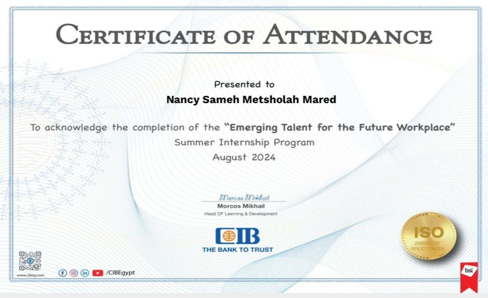
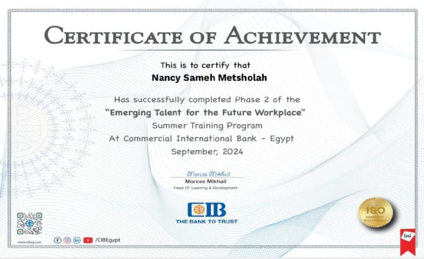
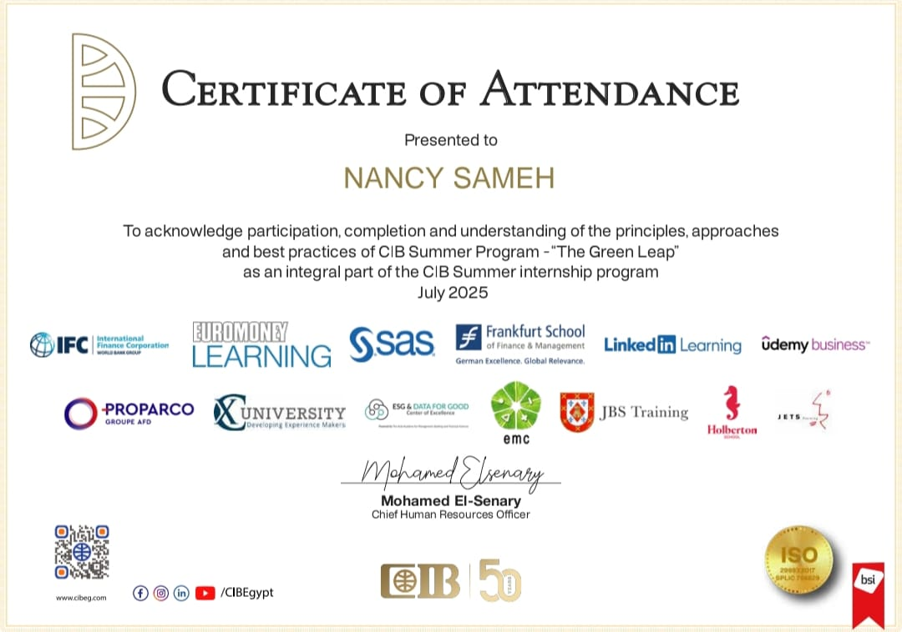

Certificate Details
Commercial International Bank (CIB)
Date
Management Sciences Graduate (Class of 2026) specializing in International Business Management from Sadat Academy for Management Sciences (SAMS). Combining hands-on experience in accounting and auditing with triple-certified banking training from Commercial International Bank (CIB).
SAMS Graduate • Class of 2026
3x CIB CertifiedDetail-oriented Management Sciences graduate with a solid foundation in International Business Management, financial accounting, and auditing procedures. Currently gaining practical field experience at an accounting and auditing office, complemented by three intensive banking internship programs at CIB Egypt focusing on workplace readiness, sustainable finance (The Green Leap), and modern corporate banking operations. Proficient in Microsoft Office suite and fluent in English.
Accounting & Auditing Firm
Major: International Business Management
Completed comprehensive coursework in Financial Accounting, Auditing, Corporate Finance, International Trade, and Business Administration.

Summer Internship Program (Phase 1) focused on foundational banking operations, corporate communication, and digital transformation in financial services.

Successfully completed Phase 2 of CIB's Summer Training Program, demonstrating advanced analytical, problem-solving, and banking workflow competencies.

Specialized training on ESG principles, sustainable finance, and global banking best practices in partnership with IFC, Frankfurt School, SAS, and LinkedIn Learning.